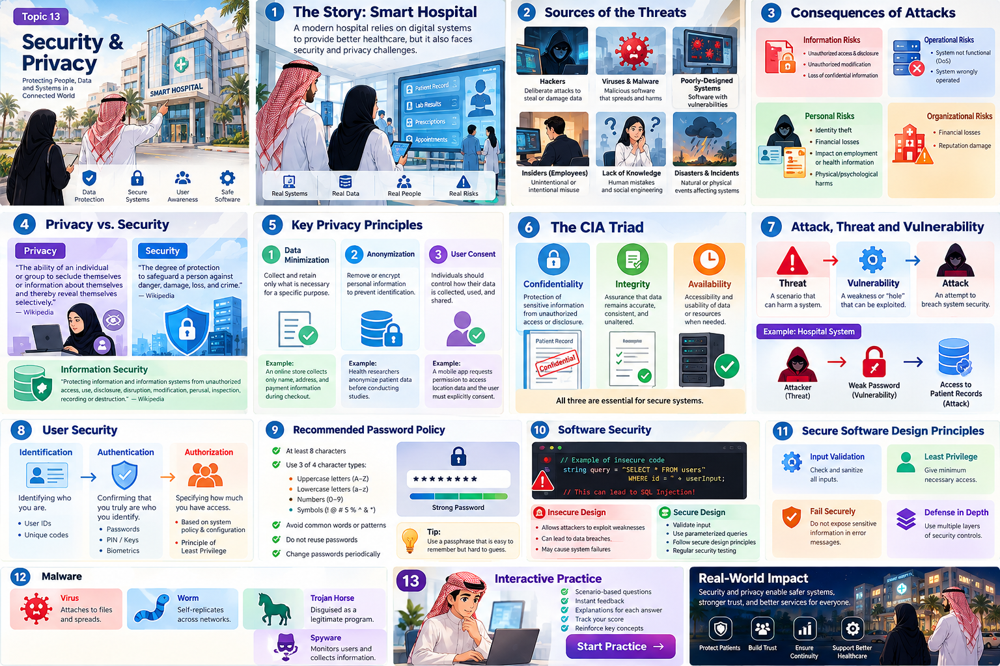

Security & Privacy
Introduction to Information Privacy & Security
Work through scenario-based questions covering privacy, CIA, attacks, user security, password policy, software weaknesses, secure design and malware.
One normal morning. Three security problems.
A patient checks in through a hospital app. Minutes later, an employee opens a record they do not need, a malicious file reaches a workstation, and the appointment service becomes unavailable. Follow this hospital story through Topic 13: each lesson asks what information matters, what can go wrong, and what protection is appropriate.
What can a security incident cause?
Security and Privacy
This topic introduces information privacy and security, sources and consequences of threats, privacy practices, the CIA security properties, common security terms, user security, password policy, software-security weaknesses, secure-design principles, and malware.
Hackers, viruses and malware, poorly designed systems, insiders, lack of knowledge, disasters and other incidents.
Unauthorized disclosure or modification, denial of service, identity theft, financial loss, personal harm and organizational damage.
Privacy practices, confidentiality, integrity, availability, user controls and secure software design.
